高德地图笔记
前言：中国目前有3家开放API的地图：腾讯，百度，高德；（国外还有谷歌地图） 哪个好？哪个不好？请自行百度，，
- 问：我想成为一个牛逼的工程师，有没有必要所有地图都学会？
- 答：完全没必要！
正式开始
获取key：很简单，就注册账号走走走走走~~~
1.装在地图的容器：宽、高、id
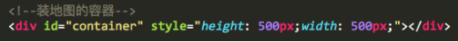2.UMD引入 高德地图外链js
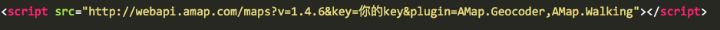这里有3点需要讲解：
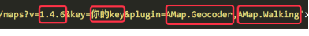- v=xxxx //你使用高德地图的版本
- key=xxx //你项目申请高德地图的key
- plugin=xxxx //这里的放在这里是同步执行 ，既该插件js加载的时候，一起加载
//高德地图，你使用了那些功能组件？多个功能组件的时候，用 逗号 隔开
AMap.Geocoder,AMap.Walking,AMap.ttttt,AMap.aaaa
AMap.Geocoder //经纬度转地名
AMap.Walking //路线规划
AMap.ttttt //…… 不一一展开说明，请自己去看高德API文档 - http://lbs.amap.com/api/javascript-api/gettingstarted //高德有哪些插件 滚到最底部
3.满足前面3点，即调起高德地图
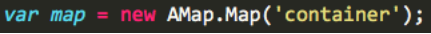 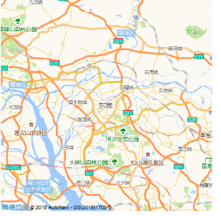进阶 API调用
1.实例化地图的时，一起参数设置进去。
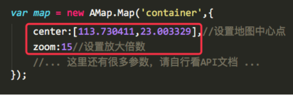 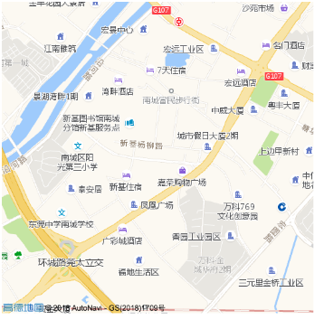//地图就会根据你设置好的参数相应变化
PS：new AMap？ 一切万物皆对象，构造函数通过 new 实例化成一个对象！
2.先实例化地图，在设置里面的东西
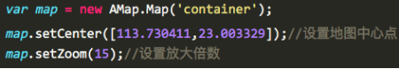两个知识点
- 1.问题：实例化地图的同时，把参数设置进去？实例化后再设置参数？两者有什么区别？
- 答：从上到下进行加载，有先后顺序，先实例化，再设置参数，会有明显的感觉，0.3秒的闪白。
- 建议： 实例化地图的时候，把最最最最重要的几个参数，设置进去，如：中心点、放大倍数……
- 2.set 和 get 的方法的运用
- 实例化地图参数，参数名：xxx
- 设置这个参数：setXxx
- 得到这个参数：getXxx
3.地图上有什么参数可以设置？请看API文档
http://lbs.amap.com/api/javascript-api/reference/map 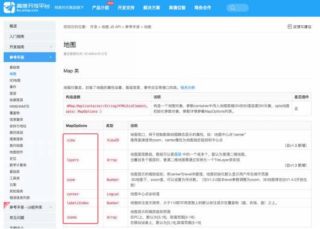在这些参数名前面，加上 set 或 get ，就是方法（必须标准的驼峰写法）
4.事件。地图类引用，本质上，也是DOM操作。
DOM操作，我重复过很多遍，千变万化，核心就三点：节点、事件、逻辑。
请看API文档http://lbs.amap.com/api/javascript-api/reference/map ，滚到下面
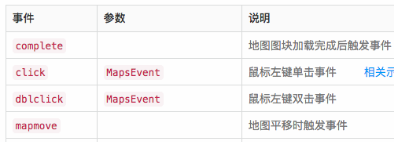// 还有很多很多~~~~你自己慢慢看
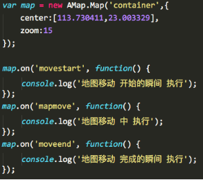还有很多事件，比如：点击地图时执行xxx，滚动鼠标地图缩放时执行xxx 看你项目逻辑和需求，配合文档使用
5.全屏幕地图应用
即便是实例化地图时，把参数设置进去，但是，始终会有零点几秒的闪白
处理方法：
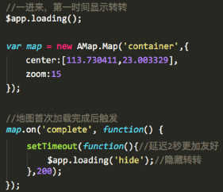如果非全屏类的地图应用，仅在页面中间部分才出现地图，无需加loading。 因为，鼠标滚动下去的时候，地图已经加载完成了。
6.简单的工具类运用：marker点 ，icon图标，范围圈，提示框（默认样式/自定义HTML）
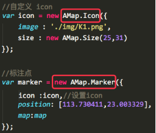 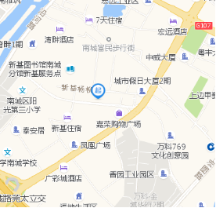注意：他们的写法都是 new AMap.xxx({xxxx}); 也同样支持 get 和 set 的方法 更多用法，请根据项目需求，自行看API文档
7.刚刚好布满屏幕，
地图容器的宽高是固定的，
形势轨迹的不定的（可能长，可能短，可能超级长，可能超级短）
如何，让数据，刚刚好填充满这个屏幕？
//在这句话作用下，你手动设置的zoom就会不生效
硬性知识篇
1.中心的写法：[113.730411,23.003329] 或 {lng: 113.730411,lag: 23.003329}; 支持两种写法
2.中心点即为经纬度，有经纬度，就涉及了坐标体系
最常见的坐标体系有3种：
- 1.地球坐标- WGS84
- 2.火星坐标（国测局坐标）- GCJ-02
- 3.百度坐标- BD-09
高德、腾讯使用的都是 地球坐标；
百度地图，为什么自己单独搞了一套坐标？原因不详，汗颜~~
4.坐标体系的兼容性，高德、腾讯都是使用火星坐标，如果硬生生的，往里面塞一个，地球坐标会怎样？ 答：同样能显示，但是，但是会存在10公里左右的偏差
5.不同体系坐标之间存在换算关系，可以解决，网上一搜就有。
6.坐标 《=》 地址 的相互转化 AMap.Geocoder
- http://lbs.amap.com/api/javascript-api/reference/lnglat-to-address/#m_AMap.Geocoder
- 地址 转 坐标，叫 正编码（全称：正向地理编码）
- 坐标 转 地址，叫 逆编码（全称：逆向地理编码）
7.查询，附近有多少个公交站？酒店？便利店？餐馆？学校？电影院？市场？
这个功能，叫 POI
- 演示地址：http://lbs.amap.com/api/javascript-api/example/poi-search/keywords-search
- API地址：AMap.PlaceSearch http://lbs.amap.com/api/javascript-api/guide/map-data/search/滚到页面中间